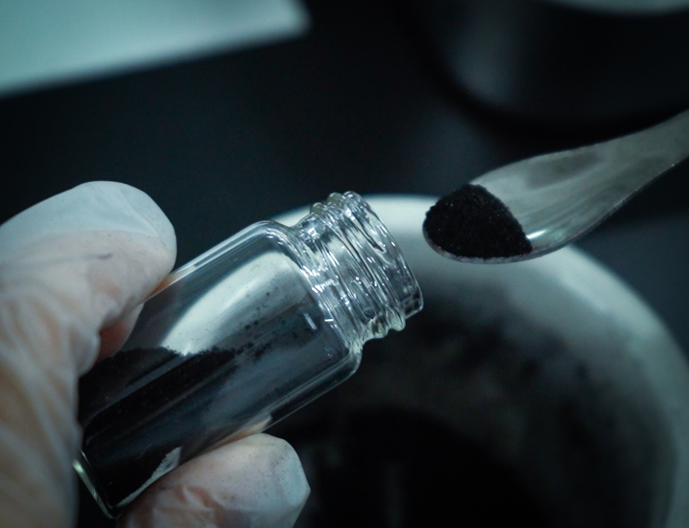

A diamond is, at its most fundamental level, a specific arrangement of carbon atoms. Each carbon atom bonds tetrahedrally to four neighbors, creating a three-dimensional lattice of extraordinary hardness, thermal conductivity, and optical brilliance. Natural diamonds form this structure under 4–6 GPa of pressure and 900–1,300°C over millions of years deep in Earth's mantle. Memorial diamonds achieve the same structure in weeks — not through geological time, but through engineered pressure and temperature.
This article explains the scientific journey from biological material to gem-quality diamond. It is written for partners who need to understand — and credibly communicate to their customers — why memorial diamonds are genuine, why the carbon source matters, and why the process is both scientifically sound and emotionally meaningful.

Figure 1: Purified bio-carbon powder derived from biological material. The carbon in this powder is chemically identical to the carbon in a natural diamond.
The Carbon Identity Principle
The single most important scientific fact about memorial diamonds is this: the carbon atoms in hair, ashes, or a flower are chemically identical to the carbon atoms in a natural diamond. Carbon-12 is the most common isotope (~99%), with six protons, six neutrons, and six electrons. Whether that carbon came from a volcanic eruption, a prehistoric tree, or a beloved pet's fur, the atom itself is the same.
This is not metaphor or sentiment. It is chemistry. When a memorial diamond manufacturer extracts carbon from biological material and purifies it to >99.5% carbon content, the resulting feedstock is indistinguishable from graphite derived from coal, petroleum, or synthetic precursors. The HPHT synthesis process does not "know" or "care" where the carbon came from — it simply arranges the atoms into a diamond lattice under extreme pressure and temperature.
From Organic Molecules to Pure Carbon
Biological material is complex. Hair, for example, is primarily keratin — a protein composed of carbon, hydrogen, oxygen, nitrogen, and sulfur arranged in long polypeptide chains. Cremated remains contain calcium phosphate, trace minerals, and carbonates in addition to residual carbon. Botanical material contains cellulose, lignin, pigments, and water.
The extraction process must strip away everything except elemental carbon. This is achieved through a sequence of controlled chemical reactions:
Step 1: Thermal Decomposition (Ashing)
Heating biological material to 600–800°C in a controlled atmosphere breaks organic bonds. Proteins denature, carbohydrates pyrolyze, and volatile components (water, gases, light hydrocarbons) escape. What remains is a carbon-rich ash — a mixture of elemental carbon, calcium compounds (from bone), metal oxides, and residual salts.
Step 2: Acid Purification
The ash is treated with hydrochloric acid (HCl) to dissolve calcium carbonate and metal oxides. Hydrofluoric acid (HF) may follow to remove silicates and other refractory minerals. Each acid wash step is followed by multiple deionized water rinses until the effluent reaches neutral pH. The result is a fine, gray-black carbon powder with inorganic contaminants below 0.5%.
Step 3: Graphitization
The purified carbon powder is heated to 2,000–3,000°C under inert atmosphere (argon). At these temperatures, the disordered carbon atoms rearrange into hexagonal graphite planes — the layered crystal structure required as HPHT feedstock. X-ray diffraction confirms the conversion: graphite shows a distinct (002) peak at ~26.5° 2θ, absent in amorphous carbon.
The Physics of HPHT Diamond Synthesis
Once graphitized, the bio-carbon is ready for diamond synthesis. The physics of this transformation is thermodynamically elegant.
At ambient conditions, graphite is the stable form of carbon. Diamond is metastable — it exists only because the energy barrier between graphite and diamond is too high for spontaneous conversion at room temperature. But under 5–6 GPa and 1,300–1,600°C, the thermodynamic landscape shifts: diamond becomes the favored phase.
A metal catalyst (typically Fe-Ni-Co alloy) is used to lower the kinetic barrier. The molten metal dissolves graphite on one side of the growth cell, transports carbon through the liquid, and precipitates diamond on a seed crystal at the cooler end. The temperature gradient (typically 20–50°C across the cell) drives supersaturation and controlled crystal growth.
Growth rate depends on temperature, pressure, and catalyst composition. Typical rates are 5–15 microns per hour. A 1-carat round brilliant diamond (~6.5 mm diameter) requires ~14–20 days of continuous growth under stable conditions.
Why Memorial Diamonds Are "Real" Diamonds
The distinction between "natural," "synthetic," and "memorial" diamonds is a commercial and regulatory category — not a physical one. All three are composed of carbon atoms in the diamond cubic lattice. All three share the same hardness (10 on the Mohs scale), the same refractive index (2.42), the same thermal conductivity, and the same chemical stability.
Gemological laboratories grade memorial diamonds using the same criteria as natural diamonds: the 4Cs (color, clarity, cut, carat). Memorial diamonds receive genuine grading reports because they are genuine diamonds. The only difference is origin: geological pressure over millions of years, versus engineered pressure over weeks.
For memorial diamond customers, this scientific reality is emotionally powerful. The diamond they wear is not a simulant, not cubic zirconia, not moissanite. It is a genuine diamond, formed from carbon that was once part of a living being they loved. The atoms are the same. The structure is the same. The brilliance is the same.
The Memorial Diamond Advantage: Traceability
One respect in which memorial diamonds surpass natural diamonds is traceability. A natural diamond's carbon source is unknown — it could have formed from subducted oceanic crust, mantle plumes, or carbon recycled through multiple geological cycles. A memorial diamond's carbon source is known, documented, and verifiable.
Our laboratory maintains a complete chain-of-custody record for every sample: receipt photography, weight logging, purification batch records, HPHT growth cell assignment, cutting log, grading report, and packaging verification. This record is linked to the CCIC national traceability QR code on every diamond's certificate. Any customer can scan the code and verify that their diamond was produced from their submitted material.
This level of traceability is impossible for natural diamonds. It is standard practice for memorial diamonds produced through professional laboratories with documented quality systems.
Conclusion
Bio-carbon memorial diamonds are not mystical transformations. They are the application of established chemistry, physics, and materials engineering to a deeply human need: preserving a physical connection to someone we have lost. The science is rigorous. The process is repeatable. The outcome is genuine.
For partners in the memorial diamond supply chain, understanding this science is not optional. Customers ask questions. They want to know that the diamond is real, that the carbon came from their pet, that the process is trustworthy. The answers are not in marketing language — they are in chemistry, thermodynamics, and crystallography. This article provides the foundation for those conversations.